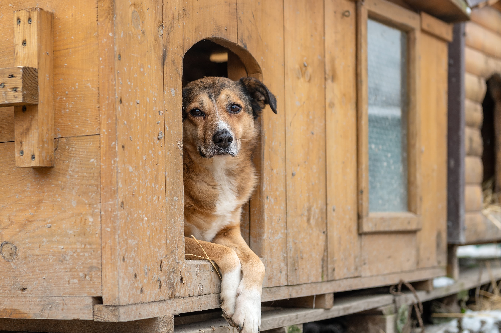

Quem Somos
Somos uma organização sem fins lucrativos que atua com animais abandonados.
Missão da ONG Friend Dog
Promover dignidade e oportunidade de acolhimento dos animais abandonados
contato com a ONG Friend Dog
Endereço: Rua passagem Bolt, 123 - Bairro Boa Vista - São Paulo/SP
Telefone:(61) 99999-9999
Email: contact@organizaçãofrienddog.com.br